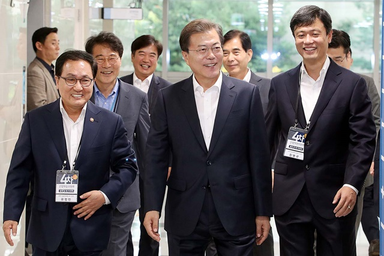

고민정 청와대 대변인은 이날 이런 내용의 문 대통령 해외 순방 일정을 공식 발표했다. 문 대통령은 우선 다음달 4일 오전 아세안+3(한·중·일) 정상회의에 참석한다. 이번 아세안 관련 정상회의 주제는 '지속가능한 발전을 위한 파트너십 증진'이다. 문 대통령은 아세안+3 정상회의에서 지속가능한 공동체 건설을 역내 협력 지향점으로 제시할 예정이다.

4일 오후에는 동아시아정상회의(EAS)에 참석해 한반도의 완전한 비핵화, 항구적 평화 정착의 실질적 진전을 위한 한국 정부의 외교 노력을 설명하고 한반도 평화프로세스에 대한 아세안 국가들의 지지를 요청할 예정이다. 아울러 한국의 신남방정책과 여타 국가들의 지역협력 구상에 협력 의지를 표명하고 역내 평화와 번영을 위한 한국 정부의 노력을 강조할 방침이다. 문 대통령은 내달 13일엔 칠레 APEC 정상회의 참석과 멕시코 공식 방문을 위해 취임 후 두 번째로 중남미 순방길에 나선다. 13∼14일 1박 2일간 멕시코를 공식 방문하는 문 대통령은 14일 안드레스 마누엘 로페스 오브라도르 대통령과 정상회담을 하고 한국의 태평양 동맹(PA) 준회원국 가입을 위한 멕시코의 지지를 요청할 예정이다. 아울러 믹타(MIKTA, 멕시코·인도네시아·한국·터키·호주가 참여하는 중진국 회의체) 등 국제무대 협력 강화, 현지 한국 투자기업 활동 지원 등에 대해 협의한다.
고 대변인은 "이번 방문을 통해 우리의 중남미 제1위 교역국이자 중견국 외교의 최적 파트너이며 미주 시장 진출의 교두보인 멕시코와의 '전략적 동반자 관계'를 더욱 강화하고 상생번영과 실질 협력을 확대하는 계기가 될 것"이라고 말했다. 문 대통령은 멕시코 방문에 이어 15∼17일 칠레 산티아고를 방문, APEC 정상회의에 참석한다. 이번 APEC 정상회의 주제는 '사람과 사람 연결, 미래 만들기'로, 정상들은 '무역·투자 및 연계성', '포용적 성장 및 지속가능 성장', 'APEC의 미래'에 대해 논의한다. 고 대변인은 "올해는 아·태 지역의 지속가능한 경제성장·번영을 목표로, 1989년 APEC이 창설된 이래 30주년을 맞이하는 해로써 그간의 APEC의 성과를 평가하고 미래 발전 방향을 제시하는 계기가 될 것"이라고 말했다. 고 대변인은 이어 "이번 APEC 정상회의 기간 중 주요국들과 양자 정상회담을 갖는 방안도 조율 중"이라고 했다.

문 대통령의 11월 한달 일정 중 절반 이상이 정상 외교로 채워졌다. 이런 가운데 일본의 수출 규제 조치와 이에 맞서 한국 정부의 한·일 군사정보보호협정(지소미아) 종료 결정으로 최악의 시기를 보내고 있는 일본의 아베 신조(安倍晋三) 총리와 정상회담이 성사될 지 관심이다. 지소미아 종료 시점은 다음달 22일 자정이다. 이 때문에 외교가에서는 칠레에서 열리는 APEC 회의가 한·일 정상회담을 할 마지막 타이밍이라는 관측이 나온다.